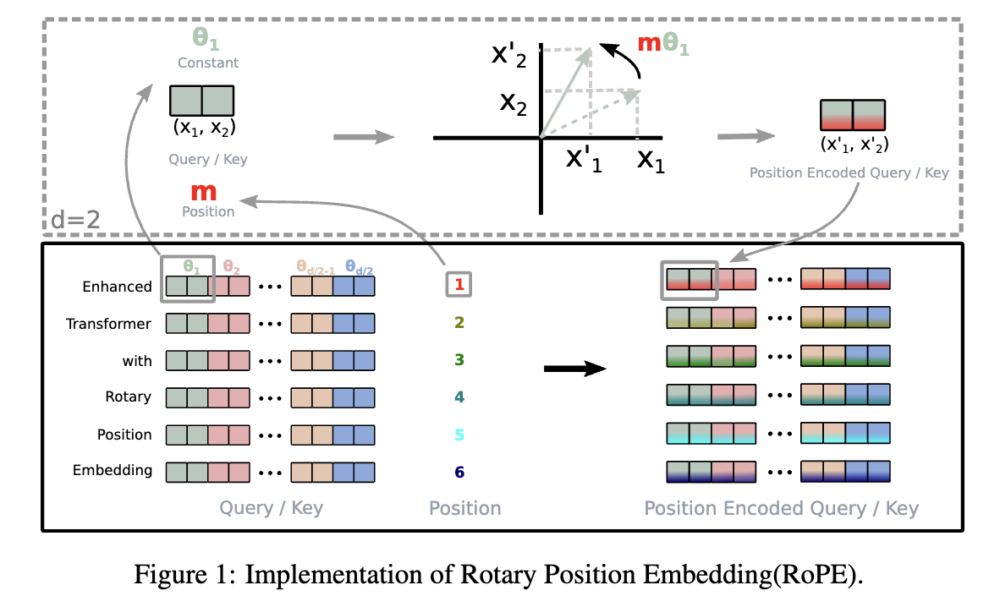

在自然语言处理的任务中，位置编码是帮助模型理解序列中每个单词或词片（token）在序列中的位置的一种机制。这是因为像 Transformer 这样的架构本质上是无序的，它们通过注意力机制处理整个序列中的所有元素，但并不能直接感知这些元素在序列中的顺序。因此，我们需要将序列的位置信息编码进模型的输入，编码的方式有绝对位置编码和相对位置编码。
绝对位置编码
绝对位置编码是一种直接为序列中的每个位置分配一个固定的编码。这种编码只依赖于位置本身，与具体的序列内容无关，以Sinusoidal位置编码为例，实现公式如下：
\[ \begin{cases} P_{(p, 2i)} &= \sin\left(\dfrac{p}{10000^{2i/d}}\right) \\ P_{(p, 2i+1)}& = \cos\left(\dfrac{p}{10000^{2i/d}}\right) \end{cases} \] 其中，\(d\)是编码向量的维度,\(p\)为位置，\(i\)为维度索引。
从公式来看，绝对位置编码实现简单，采用数学中的三角函数来编码位置信息，不含元素之间的相对位置关系。并且，由于其在编码关系在初期就已经固定，不会随着训练数据的变化而改变，因此无法很好的处理序列长度超过训练时最大长度的情况，扩展能力有限
相对位置编码
相对位置编码的目标是直接表示序列中不同元素之间的相对距离，而不是它们的绝对位置。这使得模型能够更好地捕捉元素之间的依赖关系。在注意力机制中，编码对序列中每一对元素的相对距离。例如，在Transformer的自注意力机制中，可以将注意力权重通过相对位置的偏置（bias）来修正，常用公式如下： \[ A_{ij} = Q_i \cdot K_j^T + b_{ij} \] 其中，\(b_{ij}\) 是由相对位置决定的偏置。
相较绝对位置编码，在自然语言处理中，相邻单词的关系往往比绝对位置更重要，例如主语和谓语的距离，因此这中编码方式会更符合语言特性。即使序列长度超出训练范围，相对位置编码仍然能很好地扩展，因为它关注的是元素之间的相对关系，而非绝对位置。相对位置编码能有效捕捉上下文中词之间的相对关系，对不同长度的序列具有更好的泛化能力。不过其实现比绝对位置复杂，在长序列位置编码中计算复杂度较高。
旋转位置编码
绝对位置编码具有实现简单、计算速度快等优点，而相对位置编码则直接地体现了相对位置信号，跟我们的直观理解吻合，实际性能往往也更好。由此可见，如果可以通过绝对位置编码的方式实现相对位置编码，那么就是“集各家之所长”、“鱼与熊掌兼得”了。Sinusoidal位置编码隐约做到了这一点，但并不够好。
上段摘子RoPE的作者苏剑林的博客，其描述旋转式位置编码（Rotary Position Embedding，RoPE）”，是一种配合Attention机制能达到“绝对位置编码的方式实现相对位置编码”的设计，而也正因为这种设计，它还是目前唯一一种可用于线性Attention的相对位置编码。
RoPE的 self-attention操作流程如下：对于 token 序列中的每个词嵌入向量，首先计算其对应的 query 和 key 向量，然后对每个 token 位置都计算对应的旋转位置编码，接着对每个 token 位置的 query 和 key 向量的元素按照 两两一组 应用旋转变换，最后再计算 query 和 key 之间的内积得到 self-attention 的计算结果。总体流程如下图：

RoPE的代码实现如下： 1
2
3
4
5
6
7
8
9
10
11
12
13
14
15
16
17
18
19
20
21
22
23
24
25
26
27
28
29
30
31
32
33
34
35
36
37
38
39
40
41
# 预计算旋转位置编码（Positional Cis）
def precompute_pos_cis(dim: int, end: int = int(32 * 1024), theta: float = 1e6):
# 计算词向量元素两两分组之后，每组词向量的旋转角度
freqs = 1.0 / (theta ** (torch.arange(0, dim, 2)[: (dim // 2)].float() / dim))
# 生成 token 序列索引 t = [0, 1,..., seq_len-1]
t = torch.arange(end, device=freqs.device) # type: ignore
# freqs.shape = [seq_len, dim // 2]
freqs = torch.outer(t, freqs).float() # type: ignore
pos_cis = torch.polar(torch.ones_like(freqs), freqs) # 构造复数
return pos_cis
def apply_rotary_emb(xq, xk, pos_cis):
def unite_shape(pos_cis, x):
ndim = x.ndim
assert 0 <= 1 < ndim
assert pos_cis.shape == (x.shape[1], x.shape[-1])
shape = [d if i == 1 or i == ndim - 1 else 1 for i, d in enumerate(x.shape)]
return pos_cis.view(*shape)
# xq的原始维度为[batch_size,sep_len,n_heads,head_dim],为进行RoPE计算，head_dim需为偶数
# xq.shape = [batch_size, seq_len, dim]
# xq_.shape = [batch_size, seq_len, dim // 2, 2]
# 构造为复数
xq_ = torch.view_as_complex(xq.float().reshape(*xq.shape[:-1], -1, 2))
xk_ = torch.view_as_complex(xk.float().reshape(*xk.shape[:-1], -1, 2))
# 维度对齐
pos_cis = unite_shape(pos_cis, xq_)
# 复数乘法进行旋转变换
xq_out = torch.view_as_real(xq_ * pos_cis).flatten(3) # 执行复数乘法做旋转变换，使用flatten(3)，将最后的两个维度合并，恢复原始张量维度结构
xk_out = torch.view_as_real(xk_ * pos_cis).flatten(3)
return xq_out.type_as(xq), xk_out.type_as(xk)
参考文献
[1] Transformer升级之路：2、博采众长的旋转式位置编码
[2] RoFormer: Enhanced Transformer with Rotary Position Embedding